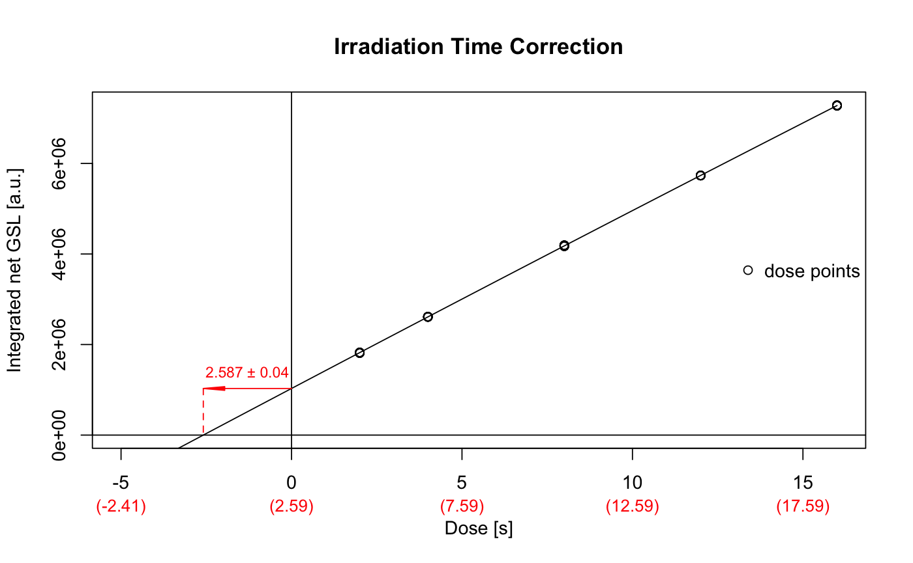

The function provides a very particular analysis to correct the irradiation time while irradiating Al2O3:C pellets in a luminescence reader.
analyse_Al2O3C_ITC(object, signal_integral = NULL, dose_points = c(2, 4, 8, 12, 16), recordType = c("OSL (UVVIS)"), method_control = NULL, verbose = TRUE, plot = TRUE, ...)
| object | RLum.Analysis or list (required): results obtained from the measurement. Alternatively a list of 'RLum.Analysis' objects can be provided to allow an automatic analysis. |
|---|---|
| signal_integral | numeric (optional): signal integral, used for the signal and the background. If nothing is provided the full range is used. Argument can be provided as list. |
| dose_points | numeric (with default): vector with dose points, if dose points are repeated, only the general pattern needs to be provided. Default values follow the suggestions made by Kreutzer et al., 2017. Argument can be provided as list. |
| recordType | character (with default): input curve selection, which is passed to
function get_RLum. To deactivate the automatic selection set the argument to |
| method_control | list (optional): optional parameters to control the calculation. See details for further explanations |
| verbose | logical (with default): enable/disable verbose mode |
| plot | logical (with default): enable/disable plot output |
| ... | further arguments that can be passed to the plot output |
Function returns results numerically and graphically:
-----------------------------------
[ NUMERICAL OUTPUT ]
-----------------------------------
RLum.Results-object
slot: @data
| Element | Type | Description |
$data |
data.frame |
correction value and error |
$table |
data.frame |
table used for plotting |
$table_mean |
data.frame |
table used for fitting |
slot: @info
The original function call
------------------------
[ PLOT OUTPUT ]
------------------------
A dose response curve with the marked correction values
Background: Due to their high dose sensitivity Al2O3:C pellets are usually
irradiated for only a very short duration or under the closed beta-source
within a luminescence reader. However, due to its high dose sensitivity, during
the movement towards the beta-source, the pellet already receives and non-negligible
dose. Based on measurements following a protocol suggested by Kreutzer et al., XXXX,
a dose response curve is constructed and the intersection (absolute value) with the time axis
is taken as real irradiation time.
method_control
To keep the generic argument list as clear as possible, arguments to allow a deeper control of the method
are all preset with meaningful default parameters and can be
handled using the argument method_control only, e.g.,
method_control = list(fit.method = "LIN"). Supported arguments are:
| ARGUMENT | FUNCTION | DESCRIPTION |
mode |
plot_GrowthCurve |
as in plot_GrowthCurve; sets the mode used for fitting |
fit.method |
plot_GrowthCurve |
as in plot_GrowthCurve; sets the function applied for fitting |
0.1.1 (2017-11-24 14:28:24)
Kreutzer, S. (2018). analyse_Al2O3C_ITC(): Al2O3 Irradiation Time Correction Analysis. Function version 0.1.1. In: Kreutzer, S., Burow, C., Dietze, M., Fuchs, M.C., Schmidt, C., Fischer, M., Friedrich, J. (2018). Luminescence: Comprehensive Luminescence Dating Data Analysis. R package version 0.8.0. https://CRAN.R-project.org/package=Luminescence
TODO
##load data data(ExampleData.Al2O3C, envir = environment()) ##run analysis analyse_Al2O3C_ITC(data_ITC)#> #> [analyse_Al2O3C_ITC()] #> #> Used fit: EXP #> Time correction value: 2.587 ± 0.04 #>#> #> [RLum.Results-class] #> originator: analyse_Al2O3C_ITC() #> data: 4 #> .. $data : data.frame #> .. $table : data.frame #> .. $table_mean : data.frame #> .. $fit : nls #> additional info elements: 1